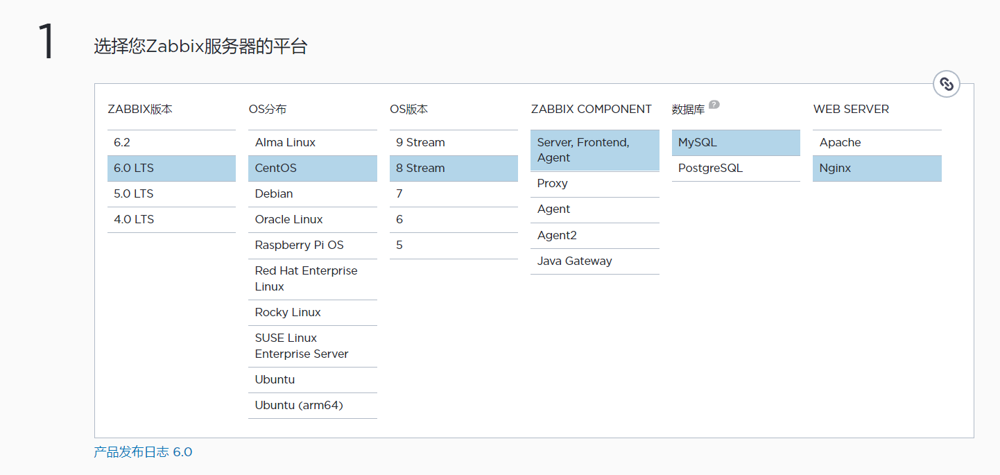
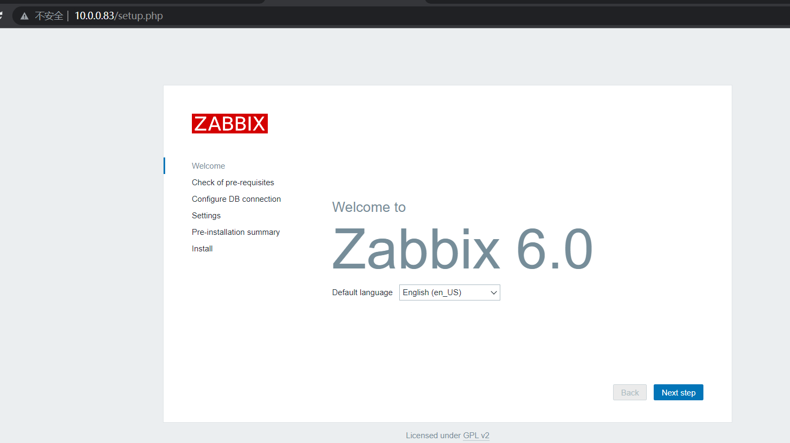
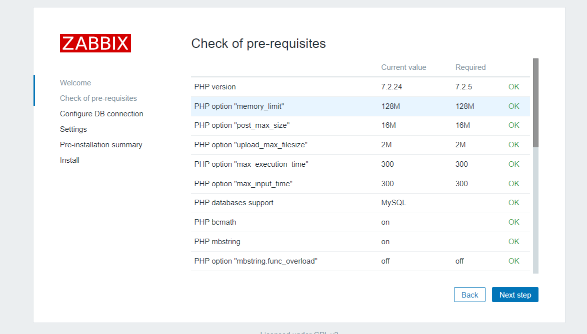
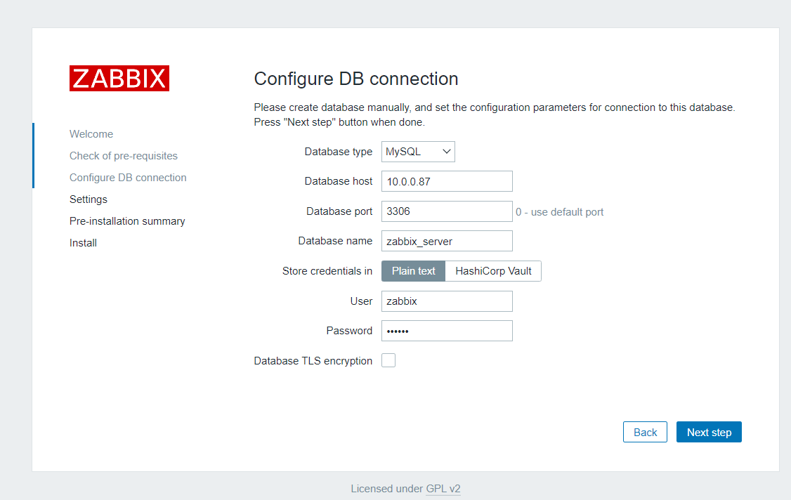
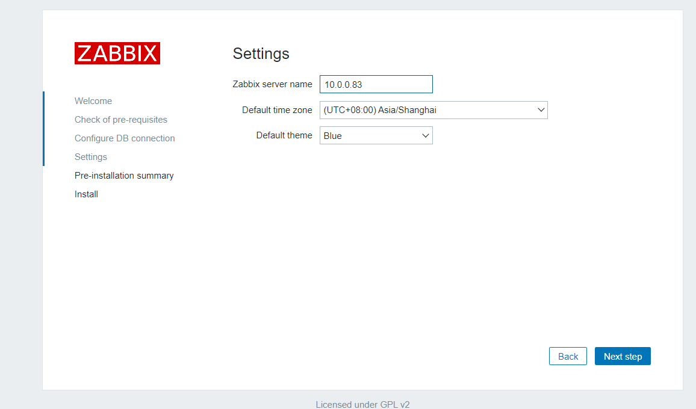
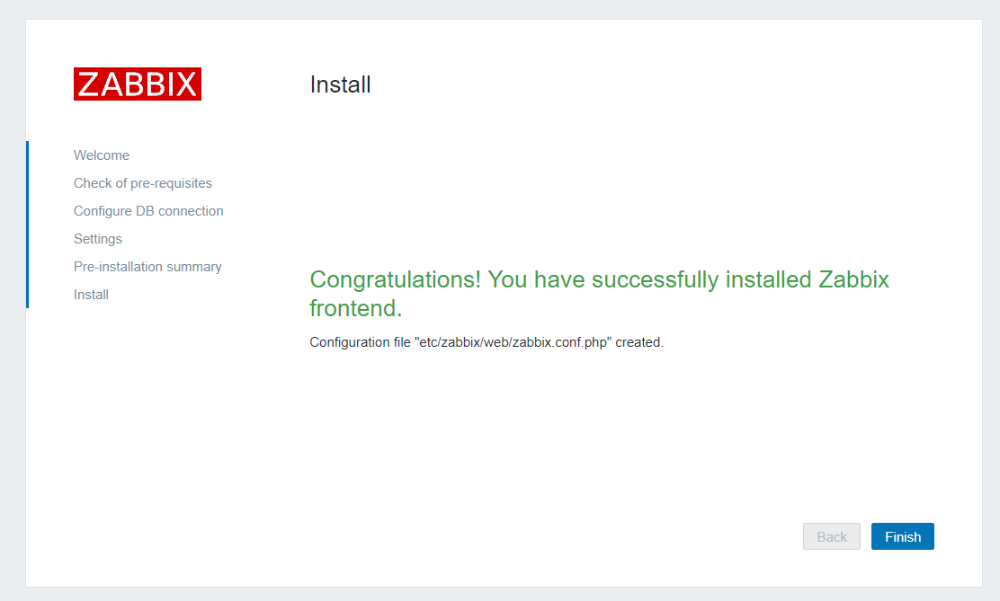
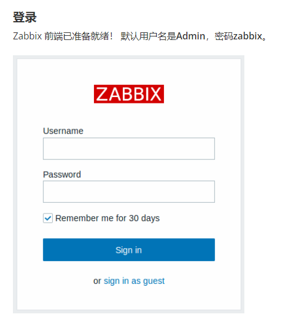
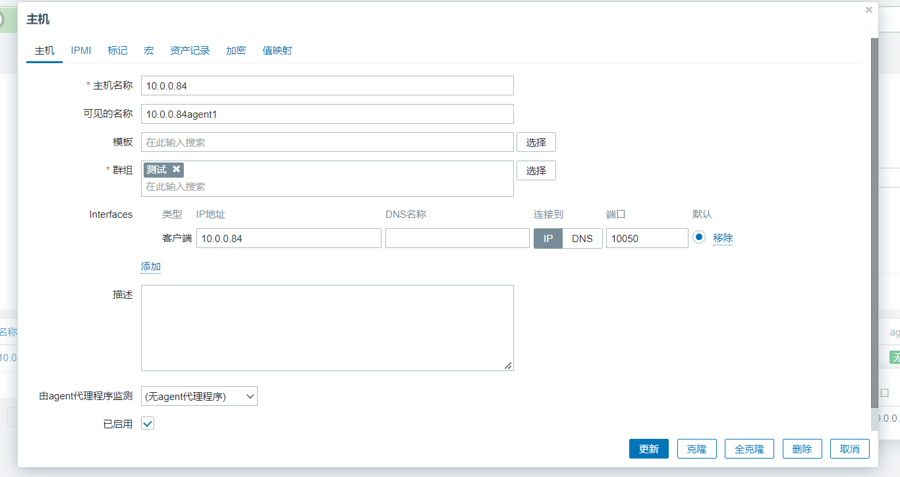
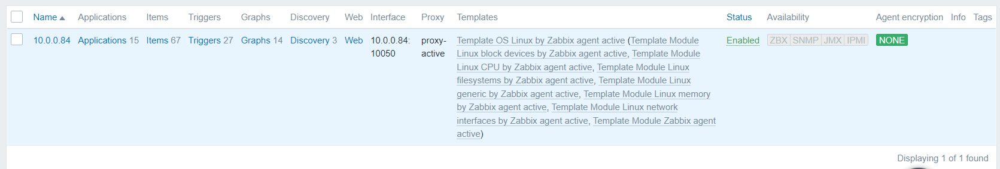

主要概括了Zabbix 的server、agent、proxy部署和使用配置。
Zabbix部署过程可简要概括为以下步骤：
从zabbix官网下载二进制包或源码包（server、agent、proxy、java Gateway）
为zabbix创建数据库和账号并授权
修改zabbix配置使其能使用数据库
修改web服务的php配置
在浏览器中访问http://主机地址/zabbix 或者 http://主机地址 进行初始化安装
在监控主机上安装zabbix agent
在web管理界面添加agent主机
部署proxy
根据proxy模式修改agent配置
web界面添加代理（hostname需要与配置中一致），为agent选择代理
相关资源 主要参考：zabbix官方使用手册
https://www.zabbix.com/documentation/6.0/zh
软件包下载：Zabbix官网产品下载页面
https://www.zabbix.com/cn/download
server、agent、proxy、java Gateway选择版本至少大版本需一致，否则由于协议版本不一致影响互相通信。
以下部署示例虚拟机：
zabbix server 10.0.0.83
zabbix agent 10.0.0.84
zabbix proxy 10.0.0.85
mysql 10.0.0.87
Zabbix server二进制包安装 选择版本如下

按照官网指示安装如下 略作修改，步骤与官网一致
a. 安装zabbix仓库
rpm -Uvh https://repo.zabbix.com/zabbix/6.0/rhel/8/x86_64/zabbix-release-6.02.el8.noarch.rpm
b. 安装Zabbix server，Web前端，agent 1 dnf install zabbix-server-mysql zabbix-web-mysql zabbix-nginx-conf zabbix-sql-scripts zabbix-selinux-policy zabbix-agent
c. 创建初始数据库 在数据库主机上运行以下代码。
1 2 3 4 mysql -uroot
导入初始架构和数据
1 2 zcat /usr/share/doc/zabbix-sql-scripts/mysql/server.sql.gz | mysql -uzabbix -p123456 -h10.0.0.87 zabbix_server# 数据库主机上可看到zabbix_server库中新建了大量表
d. 为Zabbix server配置数据库 编辑配置文件 /etc/zabbix/zabbix_server.conf
1 2 3 4 5 # 以下为修改过的行
e. 为Zabbix前端配置PHP 编辑配置文件 /etc/nginx/conf.d/zabbix.conf 取消注释并设定 ‘listen’ 和 ‘server_name’
1 2 listen 80 ;server_name 10.0.0.83 ;
f. 启动Zabbix server和agent进程 启动Zabbix server和agent进程，并为它们设置开机自启：
1 2 systemctl restart zabbix-server zabbix-agent nginx php-fpmenable zabbix-server zabbix-agent nginx php-fpm






编译安装 源码包https://www.zabbix.com/cn/download_sources#60LTS
编译安装指南https://www.zabbix.com/documentation/6.0/zh/manual/installation/install
完成安装后，其他配置与上面一致。
Zabbix agent（监控节点） 选择版本及参考安装步骤https://www.zabbix.com/cn/download?zabbix=6.0&os_distribution=centos&os_version=8&components=agent&db=&ws=
安装步骤 安装软件仓库
1 rpm -Uvh https:// repo.zabbix.com/zabbix/ 6.0 /rhel/ 8 /x86_64/ zabbix-release-6.0 -2 .el8.noarch.rpm
安装agent
1 dnf install zabbix-agent
启动
1 2 # systemctl restart zabbix-agent # systemctl enable zabbix-agent
查看进程
1 2 3 4 5 6 7 8 [root@agent ~] 2428 1 0 16:13 ? 00:00:00 /usr/sbin/zabbix_agentd -c /etc/zabbix/zabbix_agentd.conf 2429 2428 0 16:13 ? 00:00:00 /usr/sbin/zabbix_agentd: collector [idle 1 sec] 2430 2428 0 16:13 ? 00:00:00 /usr/sbin/zabbix_agentd: listener 2431 2428 0 16:13 ? 00:00:00 /usr/sbin/zabbix_agentd: listener 2432 2428 0 16:13 ? 00:00:00 /usr/sbin/zabbix_agentd: listener 2433 2428 0 16:13 ? 00:00:00 /usr/sbin/zabbix_agentd: active checks 2437 1743 0 16:14 pts/2 00:00:00 grep --color=auto zabbix
添加该主机 
zabbix proxy 依然可参考官网指南进行安装，仅作少量修改
安装软件仓库并安装 1 2 rpm -Uvh https:// repo.zabbix.com/zabbix/ 6.0 /rhel/ 8 /x86_64/ zabbix-release-6.0 -1 .el8.noarch.rpm
数据库
1 2 3 mysql> create database zabbix_proxy character set utf8 collate utf8_bin;create user 'proxy' @'10.0.0.%' identified by '123456' ;grant all privileges on zabbix_proxy.* to 'proxy' @'10.0.0.%' ;
编辑配置文件 /etc/zabbix/zabbix_proxy.conf
1 2 3 4 5 ProxyMode=0 #0是主动模式 1是被动模式，会导致其他配置不同
导入初始架构和数据
1 zcat /usr/ share/doc/ zabbix-proxy-mysql*/schema.sql.gz | mysql -uproxy -p123456 -h10.0.0 .87 zabbix_proxy
agent编辑配置文件 /etc/zabbix/zabbix_agentd.conf
1 2 3 vim /etc/zabbix/zabbix_agentd.conf
